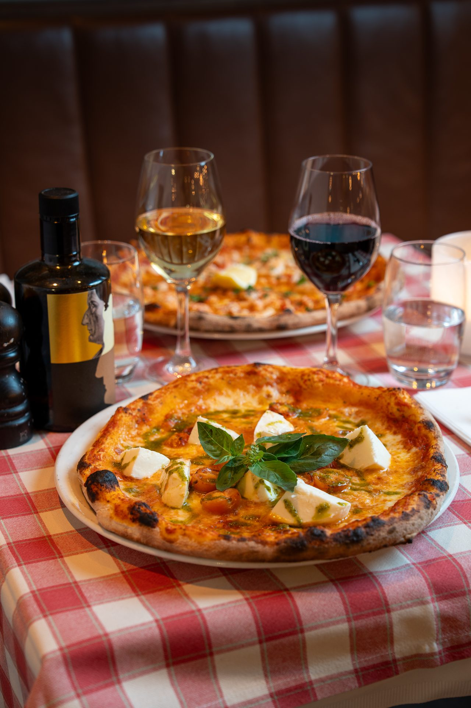

Pranzo di giorno
Veckans Lunch
En varm tallrik italiensk husmanskost mitt på dagen — lagad på det som är färskt i veckan, serverad snabbt nog för en lunchpaus och god nog att tänka på resten av eftermiddagen.
Serveras
Mån — Fre
Tider
11 — 14
Fråga oss gärna om allergier eller specialkost — vi gör vårt bästa
för att anpassa. Menyn kan ändras vid leverans från marknaden.

la settimana
Veckans meny
Varje dag bjuder vi på två rätter — en vegetarisk och en med kött eller fisk. Följ med på en liten resa genom Italien.
I lunchen ingår sallad & bröd samt dessert.
Måndag
Lunedì
Risotto ai Funghi Porcini Veg
Krämig carnaroli-risotto med skogssvamp, taleggio och svartpeppar.
Pollo alla Cacciatora Kött
Braiserad kyckling med rosmarin, tomat, oliver och kapris. Serveras med polenta.
165 kr
Tisdag
Martedì
Pasta alla Norma Veg
Rigatoni med stekt aubergine, tomat, basilika och riven ricotta salata.
Branzino al Forno Fisk
Ugnsbakad havsabborre med citron, timjan och rostade medelhavsgrönsaker.
165 kr
Onsdag
Mercoledì
Parmigiana di Melanzane Veg
Lagrade auberginer i lager med tomat, basilika och mozzarella. Bakad i vedugn.
Tagliatelle al Ragù Kött
Handgjord tagliatelle med långkokt köttragu, rödvin och tomat.
165 kr
Torsdag
Giovedì
Gnocchi al Pesto Veg
Handrullade potatisgnocchi med pesto alla genovese, pinjenötter och parmigiano.
Saltimbocca alla Romana Kött
Kalvschnitzel med parmaskinka och salvia, vitvinssås och bakad potatis.
165 kr
Fredag
Venerdì
Spaghetti Cacio e Pepe Veg
Handgjord spaghetti, pecorino romano och nykvarnad svartpeppar.
Linguine alle Vongole Fisk
Färska vongole, vitt vin, vitlök, chili och persilja.
165 kr